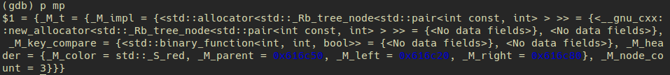

gdb STL pretty printer
GDB: not easy to learn, but easy to use
:)
gdb在打印普通变量时会有很好的作用，但是有时想要打印stl中的容器时，返回i的信息却并不怎么友好。
例如在打印一个map<int, int> mp;中的变量mp时，在gdb中使用print mp返回的是如下的结果

这样的信息很杂，而一般在debug中重要的几点就是
- 容器中元素个数
- 容器中元素值
- 容器元素类型
- …
而上面这几项在返回的信息中很难寻找。
经过一番搜索，我发现在gdb中可以使用python语言脚本，以及gdb内置的有一个名为pretty printer的东西，这个东西可以使得在gdb中打印容器时返回的信息是非常友好的！
这是一篇关于gdb pretty printer的 GDB wiki STL support ，里边有三种方式，这里展示的是第一种方法。
下面的是具体的实现步骤，经过这些步骤我们再次在gdb中打印容器时，返回的就不是一大堆杂乱的信息，而是一些重要的信息，如下
对不对，这样的信息是不是就清晰明了的许多呢？如同在ide中debug一样，并且不用使用鼠标点来点去，非常方便。
使用
SVN下载一个官方仓库先自己创建一个文件夹存放这个仓库，例如存放在
~/.gdb下1
mkdir ~/.gdb
在本文件夹下执行如下命令
如果没有svn，则需要先安装 Install svn(ubuntu):sudo apt-get install subversion1
svn co svn://gcc.gnu.org/svn/gcc/trunk/libstdc++-v3/python
这条命令执行完毕后会发现
~/.gdb目录下多了一个python文件夹。
在
~/.gdbinit文件中书写如下内容(.gdbinit文件如不存在则自行创建)1
2
3
4
5
6
7
8python
import sys
sys.path.insert(0, 'python文件夹的绝对路径')
from libstdcxx.v6.printers import register_libstdcxx_printers
register_libstdcxx_printers (None)
end
set print pretty on # 使格式更加美观注：第三行中的路径需要根据自己clone下的python自行设定，例如如果根据我前面设定的就是
/home/你的用户名/.gdb/python
经过这两步后重新启动gdb即可。
当然也可以自己书写python脚本对gdb进行各种设置，这样会更加贴切自己的使用体验。